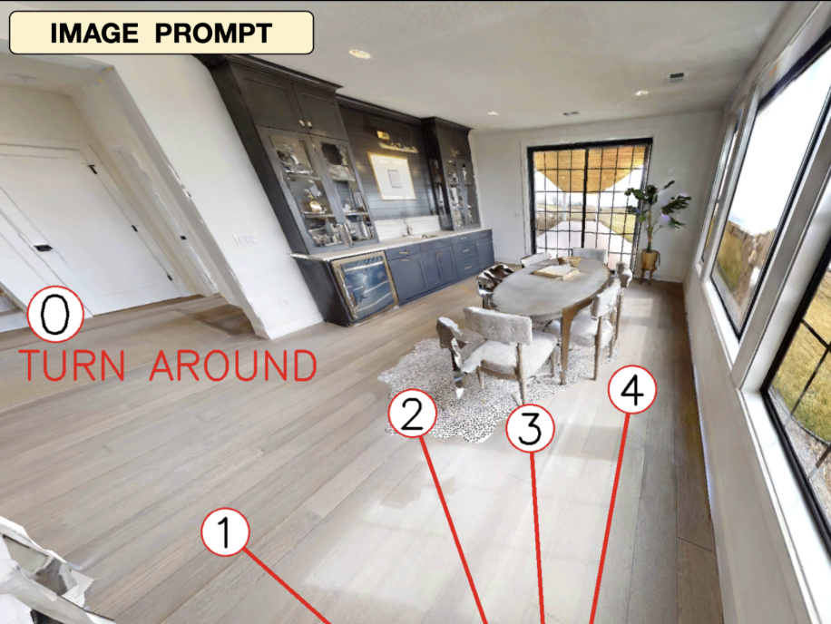
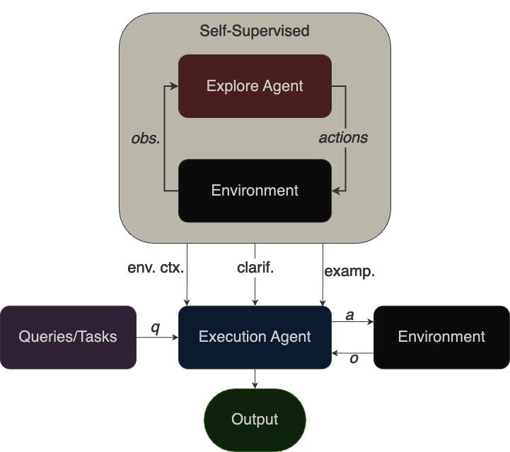
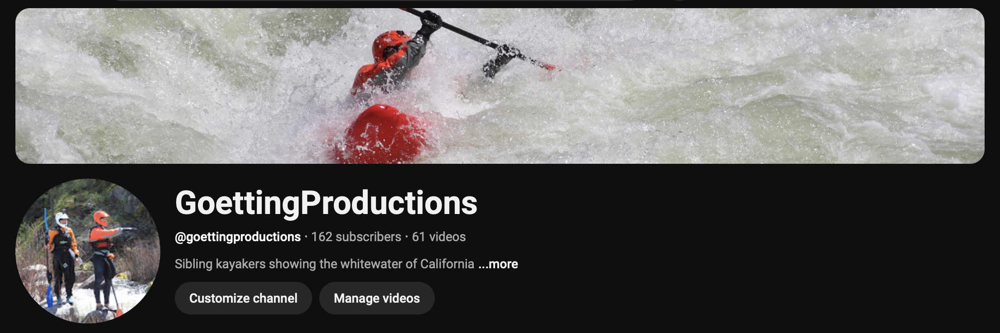

|
Hi I'm Dylan! I completed my masters in the Berkeley Artificial Intelligence Research (BAIR) Lab, at UC Berkeley, advised by Jitendra Malik, and will be joining Skild AI as a Research Engineer in June 2024. I graduated from the M.E.T program at UC Berkeley in 2024, receiving a B.S in Electrical Engineering and Computer Science and a B.S in Business Administration. I'm an avid whitewater kayaker and freeride skier for the Cal Ski Team. |

|
ResearchMy research interests include bridging the gap between robotic policies and the rich space of language agents. |
|  |
End-to-End Navigation with VLMs: Transforming Spatial Reasoning into Question-Answering
Dylan Goetting, Himanshu Gaurav Singh, Antonio Loquercio Neuro-symbolic Systems (NeuS), 2025 arXiv, 2024 project page / arXiv / video / code VLMnav: an embodied framework to transform a Vision and Language Model (VLM) into an end-to-end navigation policy. |
|  |
SSEAL: Self-Supervised Explorative Agent Learning
Evan Frick, Dylan Goetting, Dhruv Gautam 1st place winner at Berkeley RDI's LLM Agents MOOC Hackathon (3000+ participants) paper / code / demo A novel framework for agents to autonomously explore their environment and synthesize learnings for downstream performance. |
|
Master's Thesis
Dylan Goetting 2025 pdf / main page My master's thesis completed at UC Berkeley. |
|
|
RoboVerse: Towards a Unified Platform, Dataset and Benchmark for Scalable and Generalizable Robot Learning
Haoran Geng*, Feishi Wang*, Songlin Wei*, Yuyang Li*, Bangjun Wang*, Boshi An*, Charlie Tianyue Cheng*, Haozhe Lou, Peihao Li, Yen-Jen Wang, Yutong Liang, Dylan Goetting, Chaoyi Xu, Haozhe Chen, Yuxi Qian, Yiran Geng, Jiageng Mao, Weikang Wan, Mingtong Zhang, Jiangran Lyu, Siheng Zhao, Jiazhao Zhang, Jialiang Zhang, Chengyang Zhao, Haoran Lu, Yufei Ding, Ran Gong, Yuran Wang, Yuxuan Kuang, Ruihai Wu, Baoxiong Jia, Carlo Sferrazza, Hao Dong, Siyuan Huang†, Yue Wang†, Jitendra Malik†, Pieter Abbeel† Paper / Project / Code / Bibtex RSS 2025 We propose RoboVerse, a comprehensive framework for advancing robotics through a simulation platform, synthetic dataset, and unified benchmarks. Its MetaSim infrastructure abstracts diverse simulators into a universal interface, ensuring interoperability and extensibility. RoboVerse improves sim-to-real transfer and enables consistent evaluation for imitation and reinforcement learning, addressing key challenges in scaling robotic data and benchmarking. |
AdventuresI like to explore the world and document my adventures. Some videos are highlights from my YouTube channel.  |
|
Template adapted from Jon Barron |